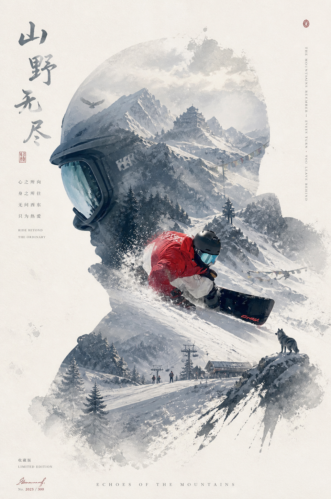

01
科学系统教学
基础到进阶- 优化基础站姿和板上平衡
- 训练精准重心转移与刃角控制
- 结合视频复盘，让问题一眼可见

犹他盐湖城单板招生 · Carving · Freeride · Powder Guide
长期扎根 Wasatch 滑雪区，熟悉 Solitude 与 Powder Mountain 的雪道、树林、地形和粉雪线。拒绝模糊的“感受派”，用看得见的技术拆解带你突破瓶颈。
Coach Profile
面向盐湖城及周边雪场的单板学员，提供一对一、一对二和小班精细化教学。课程从站姿、重心转移、刃角控制和路线选择开始，把每个动作拆成能看见、能理解、能重复的训练环节。
无论你卡在落叶飘、想练流畅 S 弯，还是准备进入高速刻滑、大山自由滑和粉雪地形，都会根据当天雪况、体能和目标定制训练节奏。
Core Lessons
01
02
03
04
Utah Resorts
For Riders
Booking
提供一对一、一对二和小班教学。平日、周末均可预约，具体雪场会根据学员目标和当天雪况提前沟通。